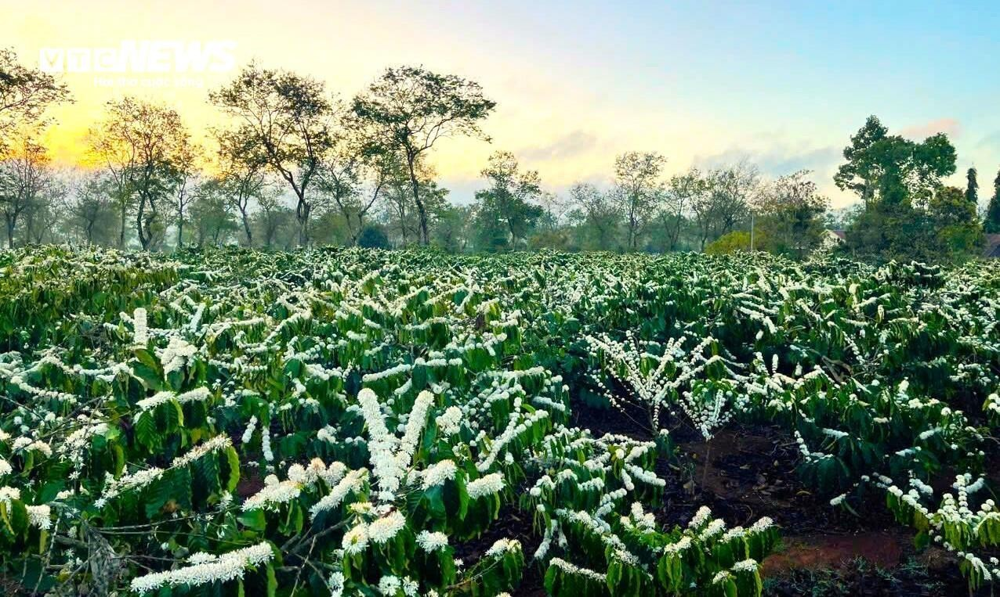

Nông sản từ vùng đất đỏ bazan
Cà phê, hạt tiêu, mắc ca và mật ong do bà con Đắk Lắk, Gia Lai, Lâm Đồng trồng, bán thẳng đến tay bạn.
Xem sản phẩm
Cà phê, hạt tiêu, mắc ca và mật ong do bà con Đắk Lắk, Gia Lai, Lâm Đồng trồng, bán thẳng đến tay bạn.
Xem sản phẩm
Thu mua trực tiếp từ nhà vườn quen.
Phơi sấy và đóng gói cẩn thận.
Nhận hàng sau 2 - 4 ngày.
Ít khâu trung gian nên giá mềm hơn.

Cửa hàng bắt đầu từ vườn nhà hơn 20 năm trước. Khách ở xa hỏi mua nhiều, nên gia đình mở thêm cửa hàng để bán cả nông sản của hàng xóm.
Đọc tiếp